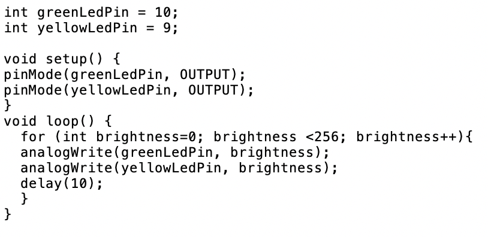
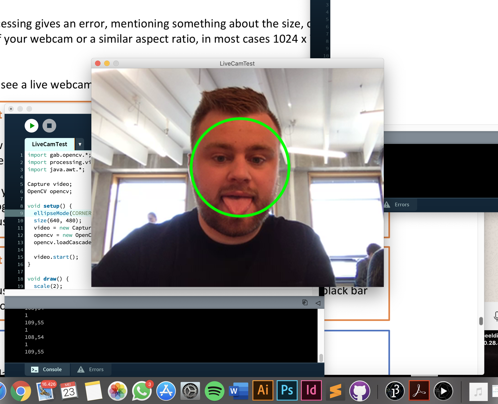
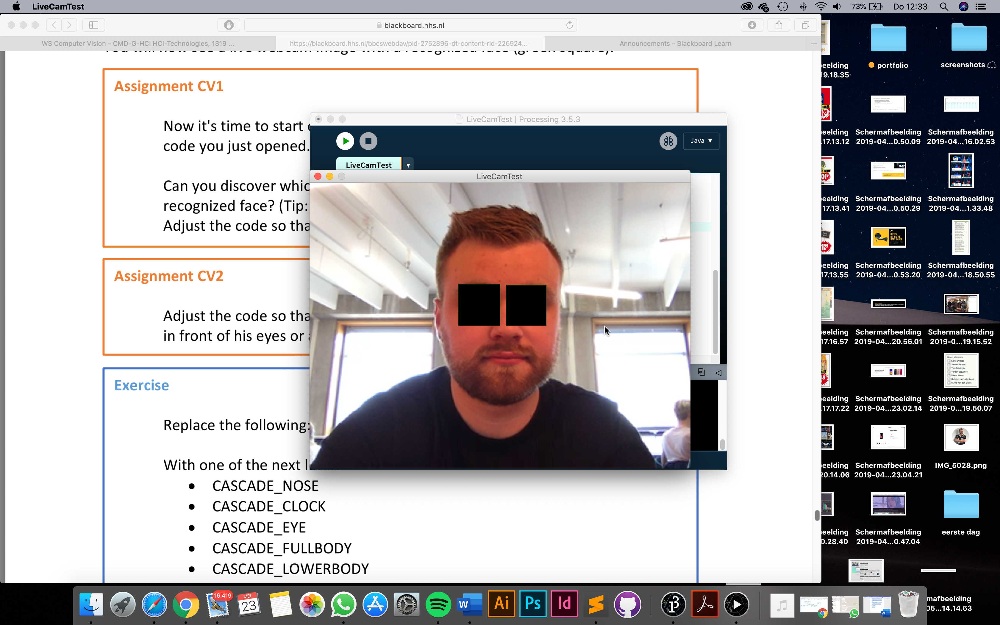
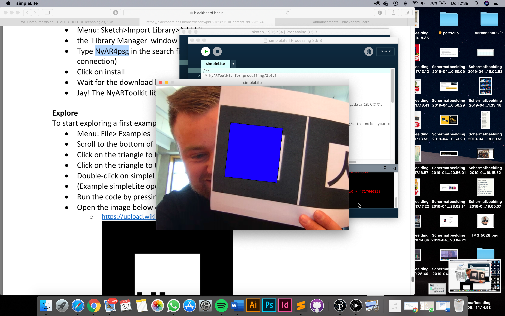

Bij deze opdracht heb ik gebruik gemaakt van twee leds lichtjes en twee resistors en drie draden om mee te verbinden. De twee leds lichtjes moeten op dezelfde rij staan als met de resistors. Dat zorgt ervoor dat er weerstand is, en niet het ledje teveel energie krijgt en kapot gaat. De bedoeling was door de code in je arduino te uploaden de ledjes gaan knipperen op dezelfde tijd.
Daarna was de opdracht om de leds om en om aan te laten gaan en weer uit. Daarmee creër je een effect dat ze om en om wisselen. En dan de eind opdracht was dat het ledje groen 2 keer zo snel knippert ten opzicht van het gele ledje.
Rechts ziet u de code die hoordt bij de laaste opdracht.
Opdracht 4C

Voor deze opdracht hebben we dezelfde instellingen van de board nodig als bij opdracht 3C. eerste krijgen we uitleg wat de pins op de arduino board in houdt en welke ingang je moet gebruiken. We werden uitgedacht om nu met cijfers te werken van 0 tot 255 max. 255 betekend dat het licht 100% geeft. En 0 helemaal uit. Wat je ziet in het filmpje dat dat ze eerst allebei branden. Maar dat het licht van de ene omhooggaat en de andere helemaal uit.
Opdracht 6C
Hier zit ook opdracht 5 in omdat het hierin door ging. Voor deze opdracht heb ik de potentiometer toegevoegd. En nog een 5v en verbonden op A0. Eerst ging ik met een monitor op de computer spelen met de potentiometer. Door eraan te draaien zie je op het scherm en streep die je omhoog of omlaag kan bewegen. Je kan daardoor figuren maken denk bijvoorbeeld aan een berg. Voor de eind opdracht was het de bedoeling dat je door te draaien aan de potentiometer het licht aan of uit kan doen. Ook is het mogelijk om de hoeveel licht te veranderen.
Opdracht 7
Ik was nog steeds bezig met led lichtjes. Deze keer kwam er een lichtsensor bij. Met de sensor kan je het licht laten aanpassen aan de omgeving. Dus hoe meer licht op de sensor hoe feller de leds zullen schijnen. En als je het donker maakt voor de sensor passen de leds zich aan en schijnen ze minder fel. Het bijzondere is dat zo klein sensortje het licht kan waarnemen en dus door kan geven dat de leds minder moeten schijnen. Je ziet 2 filmpjes. Waarbij de eerste het beter doet als het donker wordt voor de sensor. En het 2de filmpje zie je dat het niet altijd goed gaat en de sensor het dan niet zo goed doet.
Opdracht 8 en opdracht 9
Ik gebruik nog dezelfde opstelling als van opdracht 7. I.p.v. alleen naar de leds te kijken, als je het licht weghaalt bij de sensor. Kijk je ook naar de monitor op je beeldscherm. Je kan in de code aanpassen wat je wilt zien op je beeldscherm. Zo kan je. En rondje laten zien. En kan je deze bewegen door met de licht sensor te spelen. Ook heb ik in de code aangepast zodat je een rood boxje ziet die je ook kan laten bewegen door de licht sensor.
Opdracht 10F
Bij opdracht 10 gingen we aan de slag met buttons. Op de arduino board kon je een klein button plaatsen. Eerst ging ik aan de slag met een button zodat je er op drukte het lichtje ging branden. Ben de laatste opdracht had je twee buttons die ervoor moest zorgen dat als je de ene in druk het lichtje aangaat en bij allebei in gedrukt het lichtje weer uitgaat.
Opdracht 11B
Het board moest weer worden opgeschoond. En begon ik weer opnieuw. Deze keer had ik de servomoter nodig. Dit motortje kan 180 graden draaien. En door de code zo aan te passen kan die dansjes doen. De opdracht was dan ook laat het pijltje gekke bewegingen maken door de code aan te passen.
Opdracht 12B
De buttons kwamen weer terug dit keer om het pijltje te laten bewegen. Als je dus op de ene buttons drukt gaat die de ene kant op en zo ook andersom.
Opdracht 13
Nu ga ik voor het eerst de kleine speaker gebruiken. Met de speaker kan ik een eenvoudig geluidje afspelen. De bedoeling is dat je met de code die al gegeven is een deuntje kan laten afspelen. Bij de volgende opdracht is het de bedoeling dat je een eigen deuntje maakt en deze laat afspelen.
VR environments
MadMapper
Hier projecteren we plaatjes of filmpjes op onderwerpen. Zo krijg je het effect dat het net echt lijkt. Ik ben bezig geweest met een wereldbol met een paddelstoel er bovenop. En een soort van bal die verschillende kleuren geeft.
Unreal Engine Assignment
Hier zie je in het filmpje een banaan en die banaan draait een rondje om zijn eigen as. Ook heb ik met de banaan een game gemaakt die een blokje alle bananen op moet eten.
Computer Vision
Assignment 1
De opdracht was maar verschillende rondjes in verschillende kleuren. Die je ziet op het schermpje.
Assignment 2
Eigenlijk dezelfde soort opdracht als de opdracht hierboven. Alleen deze keer andere vormen en andere kleuren.
Assignment 3
Opdracht was dat als je met de muis er overheen gaat het rondje je volgt. En als extra heb ik gedaan dat deze van kleur veranderd als je in bepaalde hoeken gaat.
Assignment CV1

Hierbij werd er gebruik gemaakt van de webcam, die door software mijn gezicht herkend en dus een groen rondje om mijn hoofd projecteert.
Assignment CV2

Ook bij deze werd er gebruik gemaakt van de webcam. Deze keer de code aangepast zodat hij mijn ogen herkend. En het een zwart boxjes voor mijn ogen geeft.
Assignment CV3
Was de bedoeling dat hij mijn ogen volgt.
Assignment AR

Door een papier met een soort van code uit te printen. Kan ik het voor de webcam houden en herkend het systeem de code en maakt er een blauw boxje van.